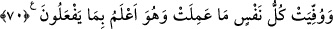

olmaksızın bu nurla aydınlanır. Bu sebeple, yâni mânâ böyle olduğu için nur lâfzı ism-i
celîle izâfe edilmiştir.
Sehl şöyle der: “Kıyamet gününde mü’minlerin kalbi, Rablerini tevhîd etmeleri ve
peygamberlerinin sünnetine uymaları sâyesinde ışıl ışıl olacaktır.”
et-Te’vîlâtü’n-Necmiyye’de ise şöyle der: “Varlık arzı kendisine tecelli edince
Rabbinin nuru ile aydınlanır.”
Bazıları bunun tefsir edilemeyen gizli şeylerden olduğunu söylemiştir. Nitekim Ebü’l-
Leys Tefsiri’nde böyle geçmektedir.
“Kitap konulur,” yâni hesap ve cezâ ortaya konur. Buradaki ‘konulma’, muhasebecinin
muhasebe defterini önüne koymasından alınmıştır. Ya da amel defterleri o amelleri
işleyenlerin sağlarına ve sollarına konulur. Âyette cins ismi (kitab) kullanılmak
sûretiyle çoğul kullanmaya gerek duyulmamıştır. Çünkü herkesin kendisine âid bir
kitabı/amel defteri vardır. “Kitâb” kelimesi aslında üzerinde yazı bulunan sayfa için
kullanılır.
Kitabın daha önce semâda olduktan sonra arza konulduğu da söylenmiştir. Fakir
(Bursevî) der ki: Bu, herhangi bir kayıtla kayıtlanmadığı takdirde doğru değildir. Çünkü
iyilerin (ebrâr) kitabı ‘İlliyyîn’de; günahkârların (füccâr) kitabı ise Siccîn’dedir. (bk.
el-Mutaffifîn, 83/7-9, 18-20) Semâda olan kitaplar, Levh-i Mahfûz dahil arza
konulabilir. Yerde bulunan kitaplar ise oldukları halde kalır.
“Peygamberler ve” ümmetlerin gerek lehinde gerekse aleyhinde şâhidlik edecek
meleklerden ve mü’minlerden “şâhidler getirilir” Burada; peygamberler ile şahidler
kazâ, hüküm ve hesaba çekilmek için çağrıldığına göre ümmetlerin, mâsiyet ve günah
sâhiplerinin durumunun nasıl olacağına işâret edilmektedir.
O gün herkesin yaptıklarından, söylediklerinden sorulur
Korkudan ulu Peygamberlerin vücudu bile titrer
Nebilerin dehşet içinde kaldıkları bir yerde
Sen günahlarına ne bahaneler bulacaksın, söyle bakalım!
“Ve” kulların “aralarında hakkaniyetle” adâletle “hüküm verilir. Onlara”
vaadedildiği gibi sevapları azaltılarak ve cezâları çoğaltılarak “asla zulmedilmez.”
Âyet adâleti ispatla başladığı gibi zulüm olmayacağını bildirerek sona ermiştir.
70. Herkes ne yaptıysa, karşılığı tastamam verilir. Allah, onların yaptıklarını en
iyi bilendir.
Mükellef olan “Herkes” hayır ve şer, tâat ve mâsiyetten “ne yaptıysa, karşılığı